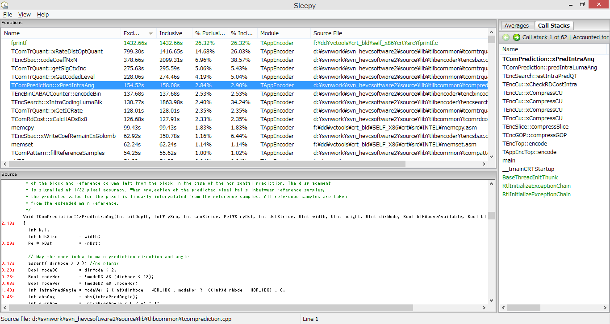

$Date: 2018-07-07 06:49:13 +0900 (2018/07/07 (土)) $
$Revision: 1347 $
very sleepy (プロファイラー)
使い方
-
File メニューの Launch
-
Enter a command to execute, with any additinal arguments.
D:\svnwork\svn_HEVCSoftware2\bin\vc10\Win32\Release\TAppEncoder.exe -c D:\svnwork\svn_HEVCSoftware2\bin\vc10\Win32\Release\encoder_intra_main.cfg -i out-640x360.yuv -b str.bin -wdt 640 -hgt 360 -fr 30 -f 30 -q 1
-
Working directory
D:\svnwork\svn_HEVCSoftware2\bin\vc10\Win32\Release
